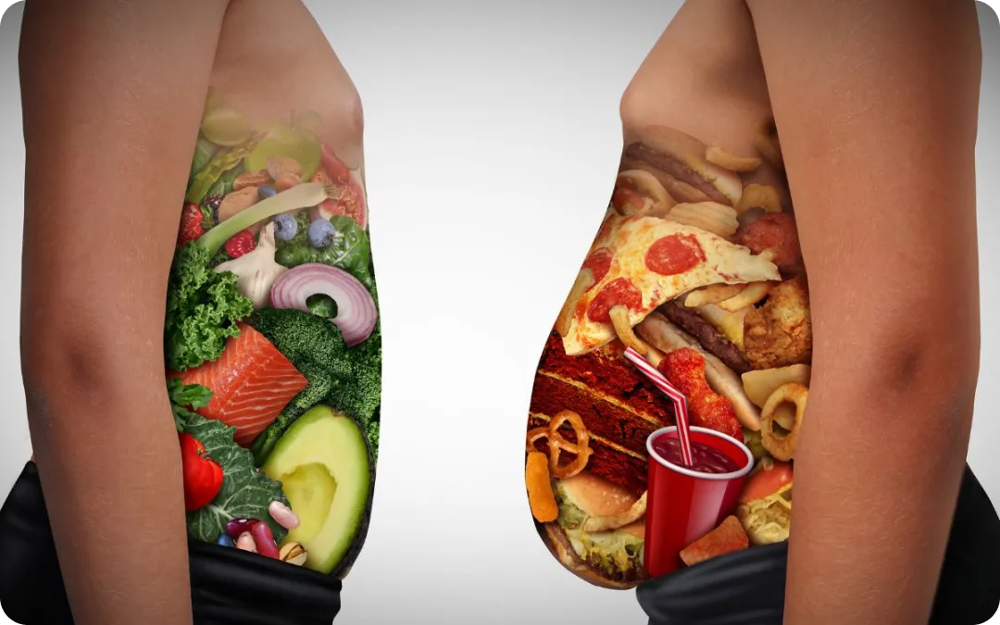

Dicas para evitar
alimentação Não
Saudável
Dicas
-
Para evitarmos alimentos não saudáveis temos que primeiramente saber o que é a alimentação não saudável. A alimentação não saudável é caracterizada pelo consumo excessivo de alimentos ultraprocessados, ricos em açúcares adicionados, gorduras saturadas, gorduras trans, sódio e pobres em nutrientes essenciais. Basicamente não consiste apenas no consumo de calorias, e sim na qualidade nutricional dos alimentos consumidos. 2000 calorias de um alimento ultraprocessado não fornecem os mesmos benefícios nutricionais que 2000 calorias de alimentos in natura ou minimamente processados.
 -
De acordo com Diretrizes Dietéticas americanas o total de calorias que devemos consumir deve ser 85% das calorias necessárias por dia para atender às recomendações de grupos alimentares de forma saudável, em formas ricas em nutrientes e os os outros 15% das calorias restantes estão disponíveis para outros usos (incluindo açúcares adicionados e gordura saturada).
Evitando a alimentação não saudável.
Entendo agora o que é alimentação não saudável, vamos ver como evitá-la:
-
1. Acrescente outros alimentos: Considere alimentos que possam substituir doces, açúcares, carboidratos e etc…
-
2. Não restrinja a quantidade que você come: Lembre-se não é quantidade que você come e sim como organizar isso na sua rotina alimentar se a sua dieta for muito restrita não só deixará de comer alimentos não saudáveis como poderá passar fome gerar outros problemas.
-
3. Engane o seu cérebro: Distraia o seu cérebro com outras coisas diga ele “comemos depois” , escove o dente, beba água ou chá e tire esses alimentos da sua visão para você não ser tentado a comer esses alimentos não saudáveis.
-
4. Alegria não está no que comemos: Antes de comer algo “ruim” reflita isso é passageiro vai ser um prazer momentâneo minha saúde não ela vai estar ali a longo prazo, reflita a alegria não está no que comemos e sim com convivio das pessoas que comem conosco.
-
5. Tenha um motivo forte: Tenha algo que te motiva a comer coisas saudáveis como bem-estar, saúde, estética, prevenção de doenças, isso te ajuda a te manter firme na caminhada.
Fonte: https://www.instagram.com/p/DN3YUWcYrHi/
Quer saber mais? Acesse:
Vida Natural Egier diagnósticos